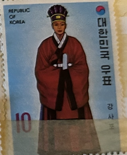
| SOURCE | TITLE| IMAGE MATCH | click to source page |
| Etsy | Korean Yi Dynasty - Etsy |  |
| eBay | Korea Stamp Scott# 859 King's Ceremonial Robe 1973 MNH L447 | eBay | 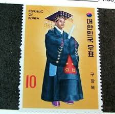 |
| HipStamp | Korea-1973 Sc#859 Traditional Korean Costumes-King'S Robe MNH Block VF | Asia - South Korea, General Issue Stamp / HipStamp |  |
| Find Your Stamps Value | Value of king korn stamps | 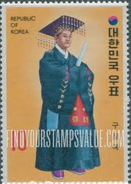 |
| Bunjang Global | 1979~81 Korean Art Five Thousand Years Full Set of 20 Special Stamps #한국미술오천년,#우표 on Bunjang Global Site. | 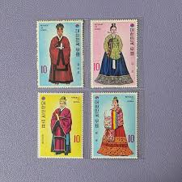 |
| eBay UK | Korea S Sets & All 10 S/S Clothes 1973 MNH-114,20 Euro | eBay UK | 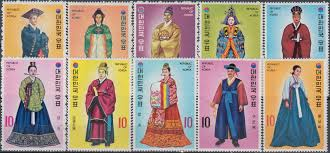 |
| 국가기록포털 | 우표와 포스터 | 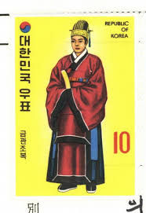 |
| Etsy | Kum Kang - Etsy | 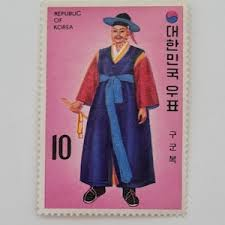 |
| Etsy | Vintage 1973 Republic of Korea Court Costumes of the Yi Dynasty Kujangbok Postage Stamp - Etsy | 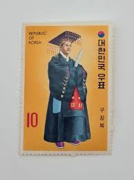 |
| Korea Stamp - Korea's National Costume | 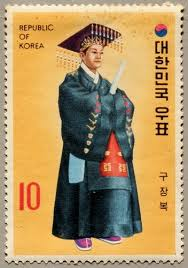 | |
| Tripadvisor | 切手博物館10 - Picture of Korean Postage Stamp Museum, Seoul - Tripadvisor | 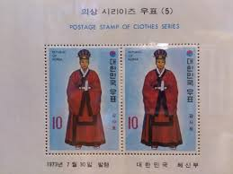 |
| eBay | Art, Artists Postage Korean Stamps for sale | eBay | 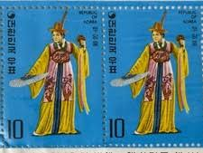 |
| Welcome to korea stamp portal system | 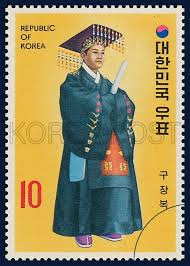 | |
| Alamy | Postage stamp from South Korea in the Traditional Korean costumes (Yi dynasty) series issued in 1973 Stock Photo - Alamy | 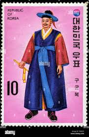 |
| eBay | Korea 1973 Vintage Set of 2 Postage Stamps (63) | eBay |  |
| eBay | Korea S Sets & All 10 S/S Clothes 1973 MNH-114,20 Euro | eBay | 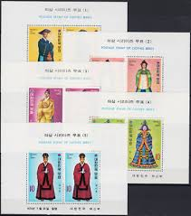 |
| eBay | 35764] Korea 1973 Clothes Costumes variety Broken 1 in left value 10 S/S MNH | eBay | 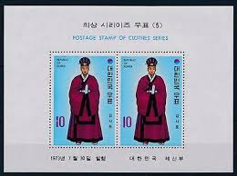 |
| Welcome to korea stamp portal system | 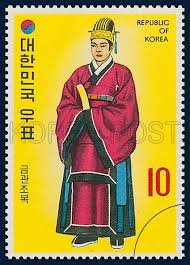 | |
| Free stamp catalogue | Stamps with the theme Costumes - Freestampcatalogue.com - The free online stampcatalogue with over 500.000 stamps listed. | 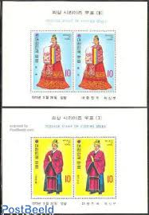 |
| eBay | Korea (9) S/S: #384a, #858a, #860a, #862a-864a, #715-717; MNH & MH; CV $60 | eBay | 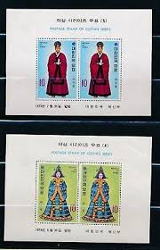 |
| eBay | South Korea Stamps: 1973 Costumes (5) Souvenir Sheet First Day Cover | eBay | 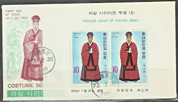 |
| Korea Stamp Society | KPC3344-3345: Korea-Iran Joint Issue — Korea Stamp Society | 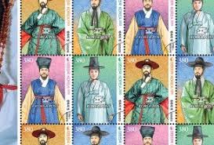 |
| trocadero.com | STAMP ALBUMS OF A KOREAN BOY (item #1491636) | 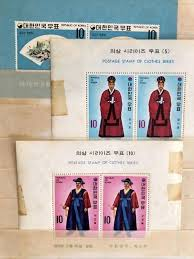 |
| eBay | S. Korea Sc. #859-68 1973 Royal Costumes VF-XF/XFNH, CV $23.85 | eBay | 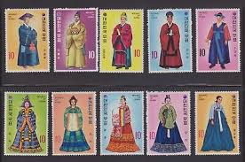 |
| eBay | South Korea Stamps:1973 Clothing Series. 4 Sets of 2. Blocks of 4. Mint NH | eBay | 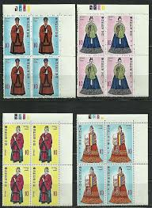 |
| postbeeld.com | Stamp 1973, Korea, South Costumes 2v, 1973 - Collecting Stamps - PostBeeld - Online Stamp Shop - Collecting |  |
| eBay UK | No: 110082 - KOREA - AN OLD BLOCK - MNH!! | eBay UK | 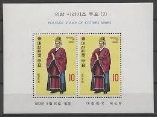 |
| eBay | Korea Stamps: 1973 Costumes, Souvenir Sheets (4) Short Set. Mint Hinged. | eBay | 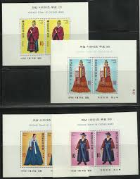 |
| eBay | Korea Stamp Scott# 860 Queen's Ceremonial Robe 1973 MNH L447 | eBay | 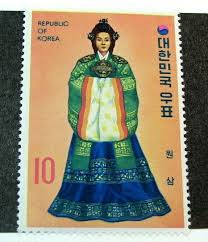 |
| eBay | Korea South 2020 "The Style of Hanbok" Block | eBay | 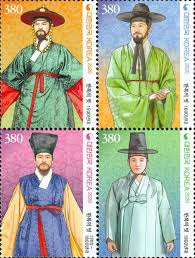 |
| eBay | China - 1990 Folk Costumes Sc# 2721-2724 MNH - (6) | eBay | 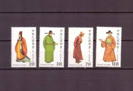 |
| eBay | Taiwan Stamps 1985 Chinese traditional Clothing 中华服饰 (9 pieces) | eBay | 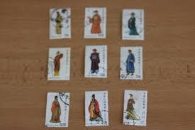 |
| Oryu Goara Beach ⛱ in #Gyeongju, Gyeongsangbuk-do Province, has fine sand and pebbles perfect for families and friends to enjoy sea bathing. During the summer holidays, visitors can rent colorful tents to | 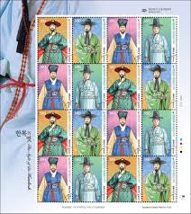 | |
| eBay | Korean Traditional clothing,The Style of the Hanbok,Korea 2021 REG FDC,Cover | eBay |  |
| AliExpress | 2 PCS SET Asian stamps，China Stamps Postage Collection - AliExpress | 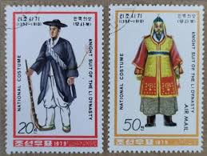 |
| eBay | Taiwan Formosa Stamps - fine to very fine used Folk Costumes S2721-4 | eBay | 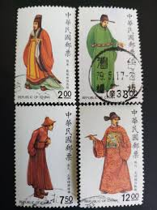 |
| eBay | KOREA #859-68a Korean Costumes, Souvenir sheets, og, NH, VF, Scott $60.00 | eBay | 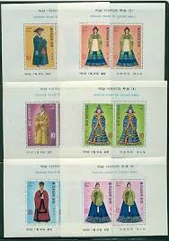 |
| eBay | Korea - 2016 Imperforated - MNH - (6299-6302) Traditional Costumes | eBay | 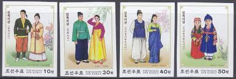 |
| MA-Shops | Korea Süd Block 363 postfrisch MiNr. Block 363 postfrisch | MA-Shops | 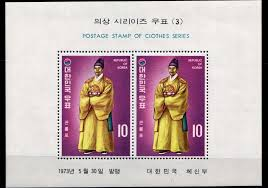 |
| Mystic Stamp Company | 1844-49 - 1979 Korea, Dem. People's Republic - Mystic Stamp Company | 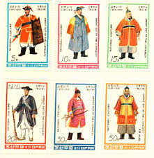 |
| eBay | China ROC - Taiwan 1990 (1840-1843) Mint never Hinged | eBay | 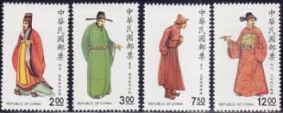 |
| eBay | No: 116985 - KOREA - "CLOTHES" - LOT OF 2 OLD BLOCKS - MNH!! | eBay | 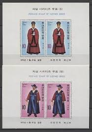 |
| eBay Australia | KOREA SCOTT # 859a68a SOUVENIR SHEETs VF MINT NEVER HINGED scott | eBay Australia | 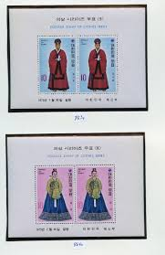 |
| Etsy | Vintage 1973 Republic of Korea Court Costumes of the Yi Dynasty Jok-ui Postage Stamp - Etsy |  |
| eBay | Korea South 2019~2021 "The Style of Hanbok Series" 3 Block | eBay | 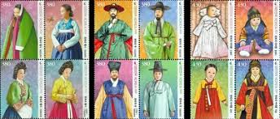 |
| Alamy | Vintage korea hi-res stock photography and images - Alamy | 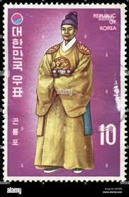 |
| Colnect | Stamp: Traditional Wedding Costumes - Dallyeong & Wonsam (Korea, South(Korea-Singapore Joint Issue) Mi:KR 2587,Yt:KR 2379,Sg:KR 2929,WAD:KR019-07 📮 | 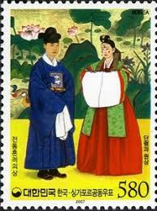 |
| 9 Korean Costumes ideas | postal stamps, stamp collecting, korean art | 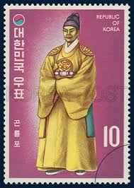 | |
| Phila Art | 2020 South Korea Protected Marine Species (3rd) 4v Stamp - Phila Art | 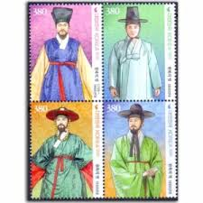 |
| Hyungkyu Lim (hyungkyu88) - Profile | Pinterest | 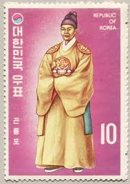 | |
| Colnect | Stamp: Pak Yon (1378-1458), musician (Korea, North(Personalities - 2011) Mi:KP 5800,Sn:KP 5044,Yt:KP 4074,Sg:KP 5085 📮 | 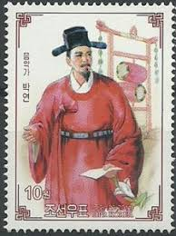 |
| eBay | G 3141 KOREA 1979 COSTUMES IMPERF. SET + PERF SET + M/S MNH | eBay | 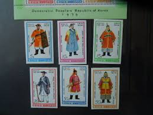 |
| Find Your Stamps Value | Precio de CRVZ ROJA HONDVRENA 1 centavo sellos | 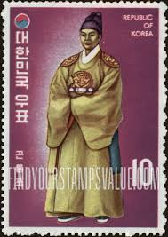 |
| Shutterstock | North Korea Circa 1979 Stamp Printed Stock Photo 1709606938 | Shutterstock | 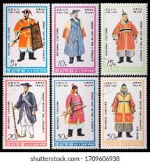 |
| eBay | KOREA #868a 1973 KOREAN COSTUMES MINT VF NH O.G S/S | eBay | 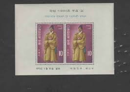 |
| eBay | South Korea Stamps: 1973 Costumes (3) Souvenir Sheet First Day Cover | eBay | |
| Alamy | Postage stamp from South Korea in the series issued in Stock Photo - Alamy | |
| eBay | Korean Traditional clothing,The Style of the Hanbok,Folkways,Korea 2020 Sheet | eBay | |
| US postage stamp. 1.25 cents. Palace of the Governors. Santa Fe, New Mexico. Issued 1954. Scott catalog 1031. | ||
| eBay | Korea South 2021 "The Style of the Hanbok" 4 FDC | eBay |